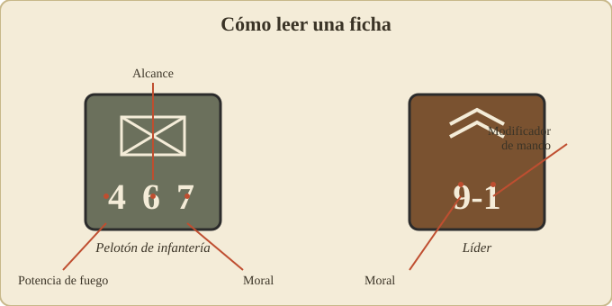

01 – Introducción y componentes¶
⟵ Volver al índice · Siguiente: Secuencia de juego ⟶
¿Qué es Squad Leader?¶
Squad Leader es un juego de guerra táctico de la Segunda Guerra Mundial. Cada jugador dirige una pequeña fuerza de infantería (y, en los módulos, blindados y cañones) en combates a escala de pelotón (en inglés squad): cada ficha de infantería representa más o menos una escuadra de 8–12 hombres, y cada hexágono del mapa equivale a unos 40 metros de terreno real. Un turno completo representa aproximadamente dos minutos de combate.
Es un juego por turnos alternos: primero actúa un bando entero (con todas sus fases) y luego el otro. Lo que lo hizo histórico en 1977 fue su sistema de instrucción programada: en lugar de un tocho de reglas, te dan 12 escenarios y cada uno introduce reglas nuevas poco a poco. Empiezas moviendo y disparando infantería; acabas gestionando carros, artillería, fortificaciones y reglas de visión nocturna.
La familia completa, en orden:
- Squad Leader (1977) – juego base. Infantería alemana, soviética y estadounidense.
- Cross of Iron (1978) – frente del Este; introduce a fondo los blindados.
- Crescendo of Doom (1979) – primeros años de la guerra; añade más naciones (británicos, franceses, italianos, etc.), caballería, reglas de 1939–41.
- GI: Anvil of Victory (1982) – frente del Oeste; el módulo más grande, con el arsenal aliado occidental completo, aviación, anfibios, etc.
Más adelante, todo este sistema fue rehecho desde cero como Advanced Squad Leader (ASL), un juego distinto y más detallado. Esta guía cubre el sistema clásico.
Componentes del juego¶
Los mapas (geomórficos)¶
El juego base trae cuatro tableros de cartón (numerados 1 a 4) cubiertos por una rejilla hexagonal. Son geomórficos: están diseñados para encajar unos con otros por cualquier borde, de modo que cada escenario te dice qué tableros usar y cómo colocarlos. Así se generan campos de batalla distintos: una aldea, un bosque, colinas, trigales, etc.
Cada hexágono (o "hex") es la unidad de espacio. Una unidad ocupa un hex y se mueve de hex en hex. Cada hex tiene un tipo de terreno (claro, bosque, edificio, trigal, huerto…) que afecta al movimiento, a la cobertura y a la línea de visión.
Los hexes están numerados con coordenadas (por ejemplo, "3P6" = tablero 3, columna P, fila 6), lo que permite a los escenarios decirte exactamente dónde se despliega cada cosa.
Las fichas (counters)¶
Son cuadraditos de cartón. Los tipos principales:
- Pelotones de infantería (squads): la unidad básica. Una escuadra de fusileros.
- Medios pelotones (half-squads): media escuadra; aparecen al sufrir bajas o al dividir un pelotón.
- Líderes (leaders): oficiales y suboficiales. No combaten apenas por sí mismos, pero multiplican la eficacia de las tropas a su alrededor.
- Armas de apoyo (Support Weapons, SW): ametralladoras ligeras/medias/pesadas, morteros, lanzallamas, cargas de demolición, fáusticos/bazucas… Se "transportan" y las usan los pelotones.
- Cañones (Guns): antitanque, de infantería, antiaéreos, obuses. Más grandes, con dotación.
- Vehículos: carros, cazacarros, semiorugas, camiones (sobre todo desde Cross of Iron).
- Fortificaciones y marcadores: alambradas, búnkeres, campos de minas, y marcadores de estado (humo, fuego, unidad "rota", etc.).
Los dados¶
Se juega con dos dados de seis caras (2d6). Casi todas las resoluciones consisten en tirar 2d6, aplicar modificadores y consultar una tabla. Conviene tener los dados de dos colores distintos: en algunas tablas el dado "blanco" y el "de color" se leen por separado.
Las tablas (charts)¶
El juego viene con cartas de ayuda que contienen las tablas clave:
- Tabla de Fuego de Infantería (el cuadro central del combate).
- Tabla de chequeo de moral.
- Tabla de impacto / penetración para cañones y carros (en los módulos).
- Costes de movimiento por terreno y modificadores varios.
En esta guía explico cómo se usan estas tablas y qué pasos sigues, pero no reproduzco sus valores: para los números exactos usa tus cartas del juego.
Cómo se lee una ficha de infantería¶

Una ficha de pelotón muestra tres números, normalmente en este orden:
Potencia de fuego – Alcance – Moral
(FP) (range) (morale)
Por ejemplo, un pelotón podría ser un "4-6-7":
- 4 = Potencia de fuego (Firepower). Cuánto "pega" al disparar. Es el factor que llevas a la Tabla de Fuego.
- 6 = Alcance (Range). A cuántos hexes puede disparar a plena potencia. Más allá de ese alcance, normalmente dispara con penalización (o no puede).
- 7 = Moral. Su resistencia psicológica. Cuanto más alto, mejor aguanta el fuego enemigo sin romperse. Es el número clave en los chequeos de moral.
Las distintas naciones y tipos de tropa tienen perfiles distintos. A grandes rasgos, en el sistema clásico:
- Las tropas alemanas de élite suelen tener buena potencia y buena moral.
- Las soviéticas a menudo van en grandes números, con potencia decente pero moral más variable (y reglas propias de mando).
- Las estadounidenses tienen buena potencia de fuego sostenido.
Los valores exactos de cada ficha vienen impresos en las propias fichas; no los memorices, léelos sobre la mesa.
Un detalle importante: muchas fichas tienen dos caras. La cara normal y una cara reducida o "rota" que se usa cuando la unidad ha sufrido un revés (ver Moral y liderazgo).
Cómo se lee un líder¶
Un líder se describe con dos números, por ejemplo "9-1":
- El primer número (9) es su moral (igual que en los pelotones).
- El segundo número, con signo (–1) es su modificador de liderazgo: una bonificación que aplica a las acciones de las unidades apiladas con él o cercanas. Un líder "−1" resta 1 a las tiradas que conviene que sean bajas (mejora el fuego, ayuda a reagrupar tropas rotas, etc.). Un "−2" es un líder excepcional.
Los líderes son decisivos: un buen líder convierte a un pelotón mediocre en una amenaza, y es quien recompone a las tropas que han huido. Protégelos.
Más detalle en 05 – Moral y liderazgo.
Conceptos que conviene tener claros desde el principio¶
- Apilamiento (stacking): cuántas unidades caben en un mismo hex. Hay un límite (varios pelotones + un líder, a grandes rasgos). Amontonar tropas concentra potencia pero también las hace vulnerables: un solo buen disparo puede afectar a todo el hex.
- Línea de visión (LOS, Line of Sight): para disparar necesitas "ver" al objetivo en línea recta entre los centros de los dos hexes, sin que un obstáculo (colina, bosque, edificio) la corte. Es uno de los conceptos que más decisiones genera.
- Unidad "buena orden" vs. "rota": una unidad rota (broken) no puede disparar ni avanzar hacia el enemigo; solo huir y tratar de reagruparse.
- Fuego de oportunidad / defensivo: el bando que no tiene el turno también dispara, reaccionando al movimiento enemigo. Esto hace que cruzar terreno abierto sea peligroso.
Con esto ya tienes el vocabulario. Vamos al corazón del juego: la secuencia del turno.